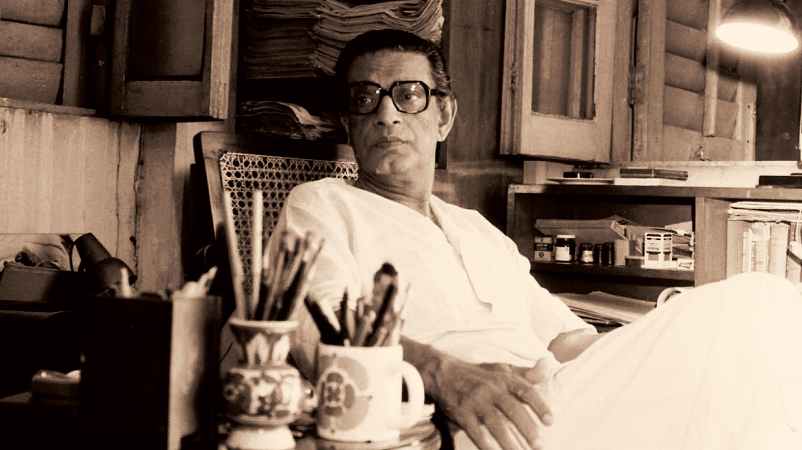
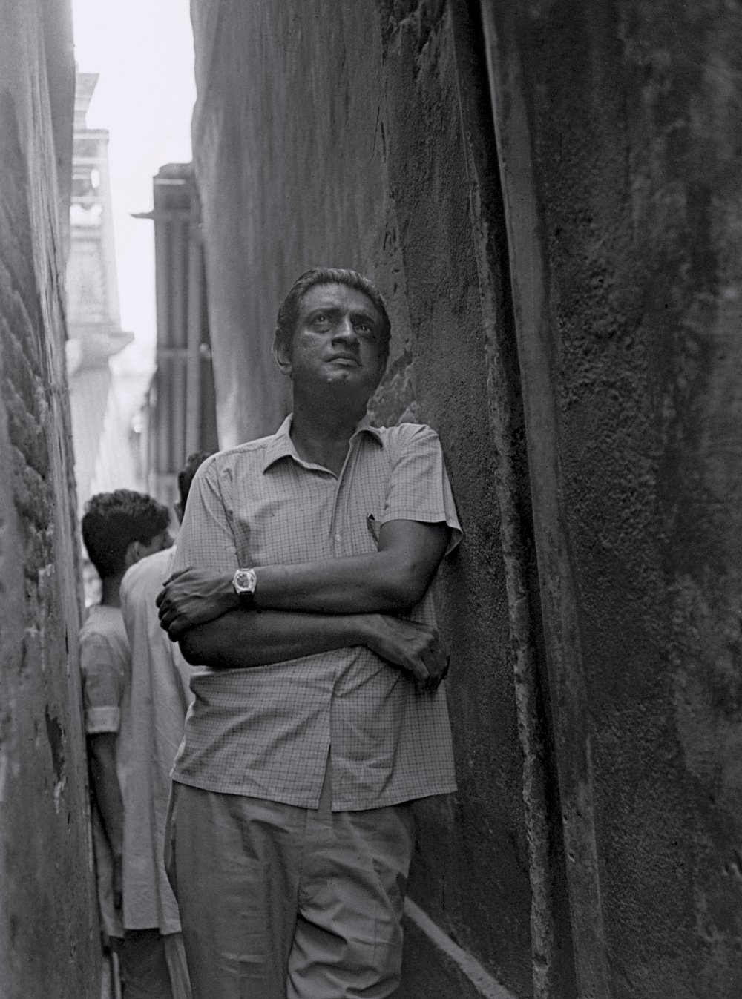
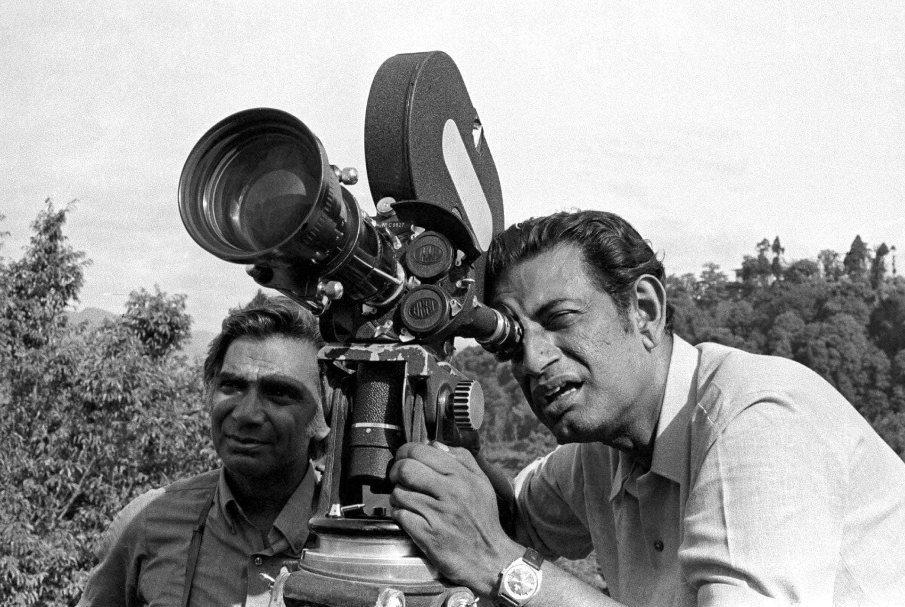

Welcome
Satyajit Ray (1921 - 1992) was one of the greatest personality in world cinema, renowned for his profound humanism, great visual style, and meticulous attention to detail. Born in Kolkata, India, into a distinguished family of artists and writers, Ray revolutionized Indian cinema by steering it away from formulaic Bollywood tropes and introducing a realistic, deeply empathetic portrayal of everyday life. His debut feature, Pather Panchali (1955), captured international acclaim and placed Indian art-house cinema firmly on the global map.

Ray's cinematic portfolio includes masterpieces like The Apu Trilogy, Jalsaghar (The Music Room), and Charulata. His films explored themes ranging from poverty and rural aspirations to the changing socio-cultural fabric of colonial and post-independence India. He was deeply hands-on with his productions, frequently writing his own screenplays, composing his own film scores, and operating the camera, which ensured complete artistic unity across his body of work.
Beyond filmmaking, Ray was a master of Bengali literature, creating iconic literary characters such as the Feluda and the genius scientist Professor Shonku. His science fiction and detective short stories remain staples of Bengali youth literature, celebrated for their wit, imagination, and lucid prose style. He also served as the editor of the legendary children's magazine Sandesh, originally founded by his grandfather.

Ray's artistic genius extended significantly into graphic design and calligraphy. He designed numerous book covers for Signet Press and created several original typefaces for the Roman and Bengali scripts, including Ray Roman, Ray Chhap, and Dafalla. His typography work reflected a profound understanding of classical proportions combined with a modern, indigenous aesthetic.
Throughout his illustrious career, Ray garnered numerous prestigious accolades, including thirty National Film Awards in India and an Honorary Academy Award in 1992 for his lifetime achievements in cinema. He was also honored with the Bharat Ratna, India's highest civilian award, shortly before his passing. His legacy endures as a defining pillar of world culture and cinematic artistry.
